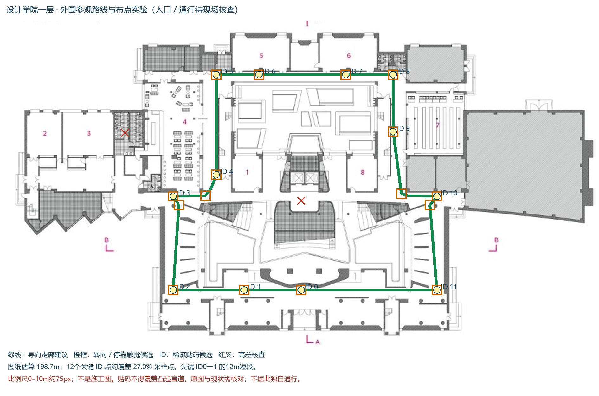

组员先看这里
2026-11-09 实验版。上海交通大学设计学院一层的原图、低墙模型、参观路线、贴码和触觉引导布置模拟。电脑、手机均可打开，无需安装；电脑大屏更方便布点。首次查看不需要相机或相机标定。
用五分钟看一遍
保持顶部“建筑原图一层·带比例尺”。点“三维模型”看低墙，点“平面与布点”回原图；旧导视图可以切换，但新旧坐标和码 ID 含义不能混用。
拖彩色码点可调整位置，拖空白处移动整张图。点太小就先在右侧选择 ID，再点“放大到所选码”。落在不可通行区会恢复原位。
地图下方“参观路线与布置实验”可切换“关键点稀疏贴码”和“距离／视线覆盖补码”，比较采样覆盖。改识别距离、相机高度或补码预算后点“按以上参数重算”。
先点“先试12m短段：0→1”，在下面选“下一目标点”切到 ID1。人物在 ID0，目标在左侧；戴双声道耳机，先测试左右耳，再点“开启方向提示音”。↑前进、↓后退、←左转15°、→右转15°；手机用页面按钮。旋转查看模型不会改变人物的听觉朝向。
修改后点页面顶部“导出当前布点 JSON”保存并发给组内记录人。各人的修改只在自己的页面内存里，不会自动同步；刷新或切底图前先导出。
图上符号怎么看
紫色虚线：整条参观路线；蓝色实线：当前人物前往目标的指引路径。
绿色线：连续导向走廊的建议；橙色框：转向或停靠的触觉提示候选。还不是盲道铺装施工图。
彩色 ID 点：12个关键码候选；青色 P 点：覆盖算法建议增加的位置，放大后显示编号。P点还没有登记为可扫描 ID。
红色小点：当前方案不满足识别距离／图上视线条件的路线采样位置。高差核查符号附近不作为参观终点。
当前计算说明了什么
外围环线按图纸估算约198.7m。假设识别斜距2m、相机高度1.2m，水平半径约1.6m。12个关键码满足约27%的采样点条件；贪心方案再建议61个P点后，267个采样点满足距离与图上视线条件。这不是实测识别率，也不证明连续定位。
算法使用A*寻路和贪心集合覆盖。没有模拟实际相机视场、俯仰、光照或人群遮挡。看不到码时没有新位置；本页的方向键模拟不等于真实手机连续追踪。
第一轮现场实验
先确认南侧 ID0 的入口假设和 ID0→1 这段实际同层可通行；卷尺复核起终点及第二段长度。图纸0–10m约75px，仍未现场核验。
使用已有打印码，实量黑框边长；先只贴端点码，再试中间补码。记录实际坐标与码顶部方向，不覆盖凸起盲道或门扇扫过区。
真实扫码需HTTPS、相机权限、手机相机标定及现场比例。每1m设真值检查点，记录识别成功率、定位误差和丢码区间；不要拿页面几何覆盖率当实测结果。
中央台阶和高差不明区域已避开。入口、通道、铺装与真实定位精度都还需现场核查；本版供小组讨论和受控实验，不作为独立无障碍导航或施工依据。
下载空白实验记录 CSV · 下载论文出处与详细实验方案 · 下载一层 GLB 模型
